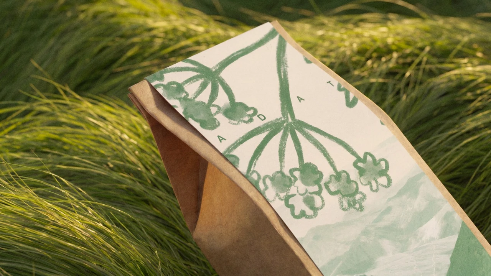
ADAT
Проект lifestyle-бренда, который объединяет современную эстетику и наследие Кавказа. В его основе экспедиции по высокогорным регионам, сбор трав для чая и чайные ритуалы во время походов.
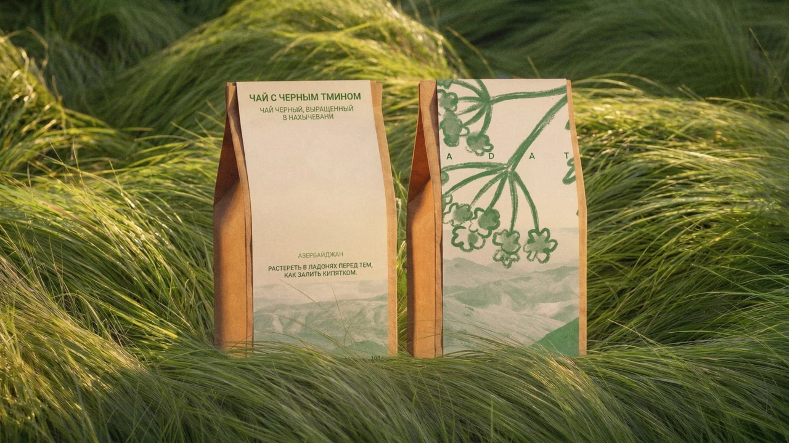
Задача и поиск
Нужно было объединить путешествия, чай и культуру Кавказа в одном бренде. В центре концепции оказался опыт исследователя, который знакомится с регионом через маршрут, вкус и местные традиции.
На этапе исследования сопоставлялись приключенческие клубы, бутик-туры и чайные бренды. Это помогло сформулировать позиционирование, в котором экспедиция и чайный ритуал становятся частями одного путешествия.
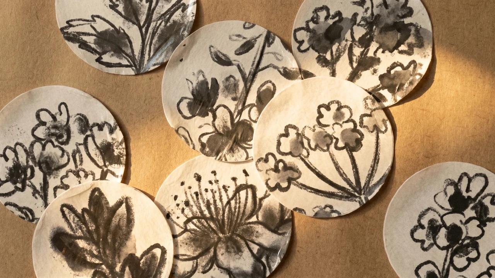
Визуальный язык
В поиске рассматривались линейная графика, пейзажи и изображения животных. В итоговой айдентике основой стали растительные иллюстрации. Они связывают графику со сбором трав и чаем, а горные пейзажи напоминают о месте путешествия.
Приглушённые зелёный, синий и розовый различают варианты оформления. Крупные фрагменты растений работают на упаковке и плакатах, небольшие изображения переходят на наклейки и значки.
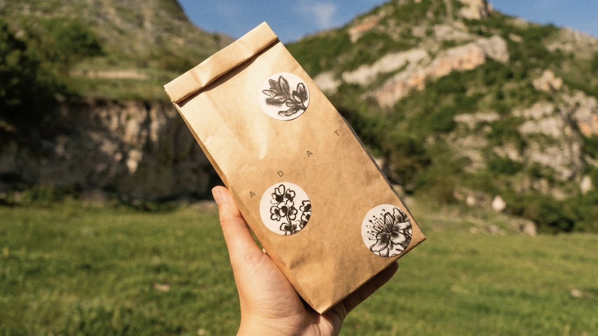
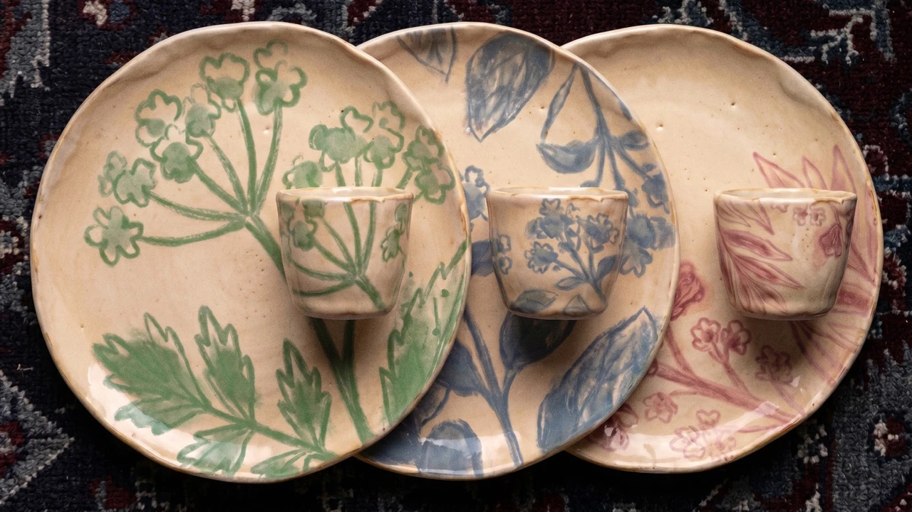
Чайный ритуал
Графика продолжается на посуде, упаковке и печатных материалах. Так чайный ритуал получает то же оформление, что и сама экспедиция, а отдельные предметы складываются в общий образ бренда.
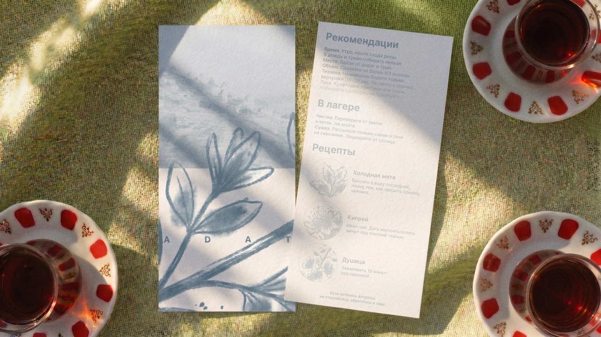
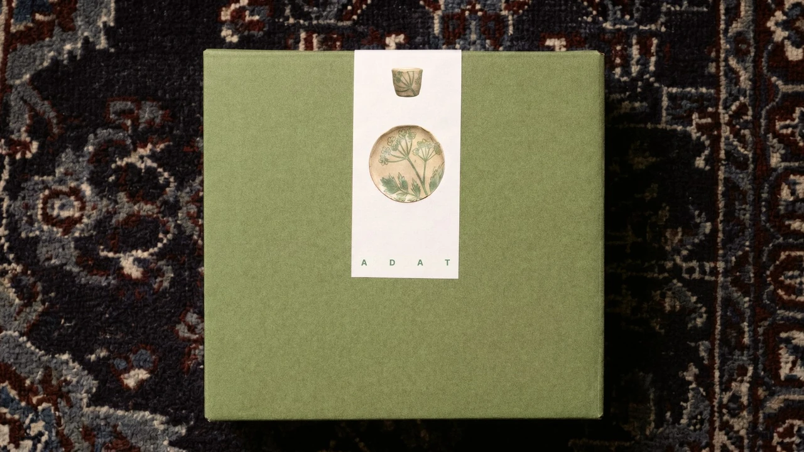
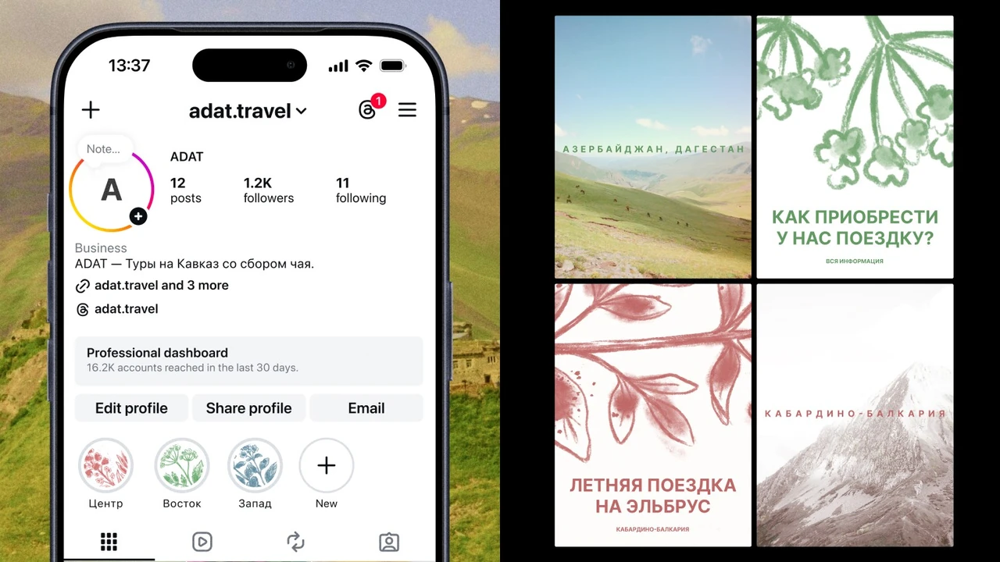
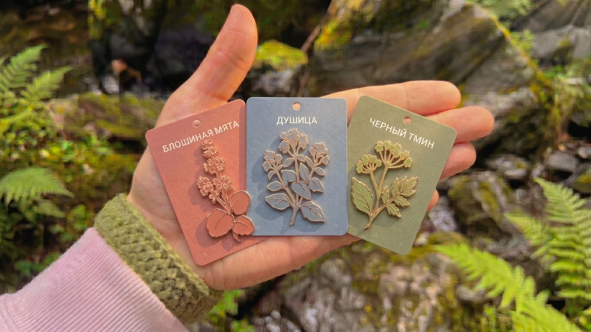
С собой из поездки
Блокноты, открытки, наклейки и значки переносят айдентику на предметы, которые можно взять в путешествие или сохранить после него. Растительные мотивы повторяются в разных масштабах и форматах.
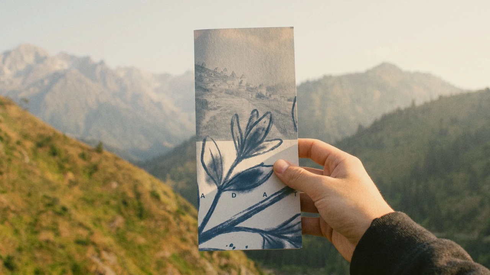
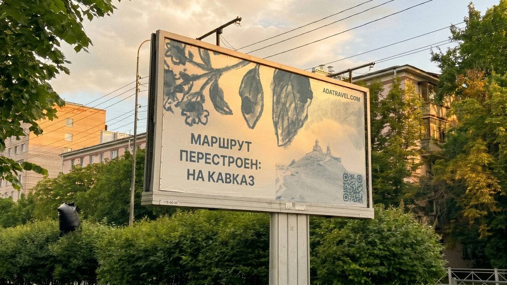
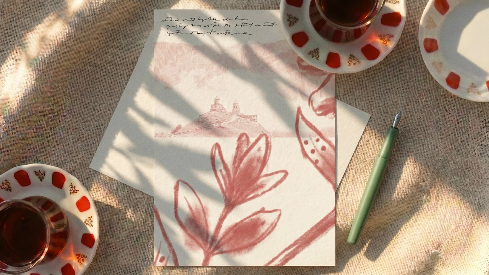
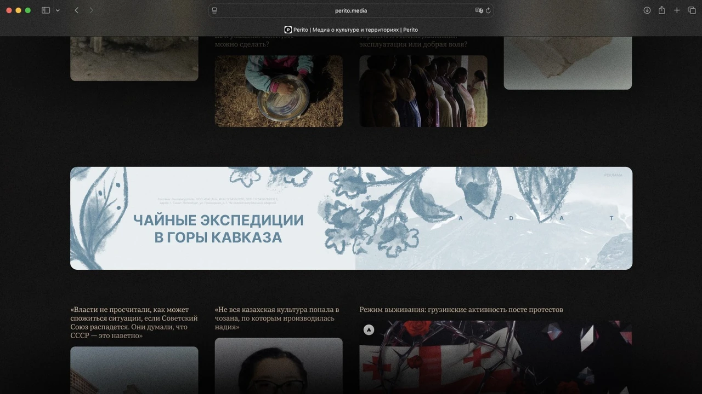
Веб-сайт
Сайт объединяет знакомство с брендом и выбор поездки. Здесь можно изучить экспедиции, посмотреть опыт прошлых участников и забронировать путешествие. Пейзажи показывают маршрут, а растительная графика связывает сайт с упаковкой и печатными материалами.
Результат
В проекте разработана айдентика для экспедиций и чайных ритуалов. Она показана на упаковке, посуде, сувенирах, рекламных материалах и сайте. Общая графика связывает знакомство с маршрутом, саму поездку и воспоминания о ней.